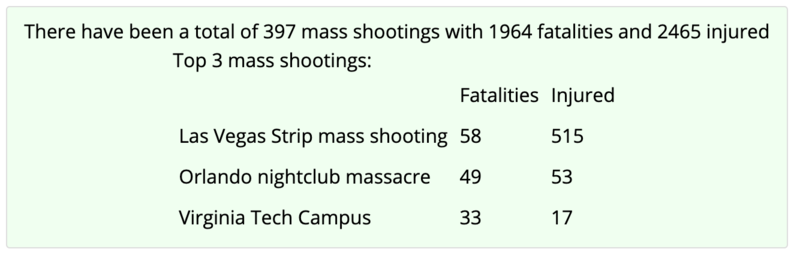

Template Macros
Use the below macros in the templates-
//In the header/footer:
${totalCount} - total number of records
${selectedCount} - number of filtered records
//In the pre record template -
${<field name>_min}
${<field name>_max}
${<field name>_total}
${<field name>_average}
These are the values specified by the user in the
filter widgets -
${filter_<field name>_min} //for numeric values
${filter_<field name>_max}
${filter_<field name>} //for enumerated and text values
//If the user does not specify a text filter value then just show blank
//If the user specifies some text filter value then wrap it with the prefix/suffix
${filter_<field name> prefix='some text prefix' suffix='some text suffix'}
Template Examples
The below example (
see it here)
shows Colorado 14k foot peaks data. The display uses
filter fields
to allow the user to filter the data. The filter_... macros in the templates
display the values of those filter fields. The prefix/suffix attributes in the macros
allow one to show a phrase only if a text filter value is selected by the user.
The template display is specified as:
{{display type="template" displayStyle="background:rgba(0,0,0,0);"
headerTemplate="There are a total of ${selectedCount} peaks
between ${filter_elev_min} and ${filter_elev_max} feet
with elevation gain between ${filter_elev_gain_min} and ${filter_elev_gain_max} feet
${filter_class prefix=' of class '}
${filter_range prefix=' in the ' suffix=' range'}"
filterFields="elev,elev_gain,distance,range,class" hideFilterWidget="true"
}}
The below display (from
here)
showing mass shooting data uses two different template displays as defined here.
Image 2: Template Example
{{display type="template"
headerTemplate="There have been a total of ${totalCount} mass shootings with ${fatalities_total} fatalities and ${injured_total} injured"}}
{{display type="template"
headerTemplate="Top 3 mass shootings: <br><table cellpadding=5><tr><td></td><td>Fatalities</td><td>Injured</td></tr>"
template="<tr><td>${title}</td><td>${fatalities}</td><td>${injured}</td></tr>"
footerTemplate="</table>"
maxNumber="3"
sortFields=fatalities
sortAscending=false
}}
Derived data can be calculated by specifying a javascript function with the field ids. For example, in the
election data example
one of the displays shows the turnout percentage using the following attributes:
function="total_ballots/active_voters"
functionName="turnout"
The full wiki text is:
{{display type="areachart" column="0"
layoutHere="true" showTitle="true" title="Line Chart with Function"
vAxisMinValue="0" vAxisMaxValue="1.0" padRight="true"
function="total_ballots/active_voters" functionName="turnout"}}
Percentage values can be calculated with the
showPercent attribute. This sums up the values of all of the specified fields and uses the
percent value.
The data values and or displayed unit of the point data that is displayed in chart can be modified
by specifying offset and scale units. For example, one can convert Kelvin to Celsius in a display
with the following attributes:
{{display type="linechart" offset1=-"273.15" unit="C" }}
There are also scale and offset2 values supported where the end value is calculated as:
value = (offset1+value)*scale + offset2
You can specify values specific for a particular field using:
{{display type="linechart" Temperature_surface.offset1=-"273.15" Temperature_surface.unit="C"
}}
Sometimes there are a number of displays on a single page that share the same set of properties.
For example, this
page
shows a number of charts of atmospheric time series data. The data itself has temperature in Kelvin and pressure in Pascals.
However, the displays show the data in Celsius and Hectopascals. As described aboce a scale, offset and new unit
for the displays showing temperature and pressure data can be specified. However, because there are a number of displays
that show this data one would have to specify these attributes for every display tag. However, using the
displayPropert
tag global properties can be specified that are applicable to all displays on the page:
{{displayProperty name="Temperature_surface.offset1" value="-273.15"}}
{{displayProperty name="Temperature_surface.unit" value="C"}}
{{displayProperty name="Pressure_surface.scale" value="0.01"}}
{{displayProperty name="Pressure_surface.unit" value="hPa"}}
You can filter the data that is shown based on string pattern matching or numeric operators.
You do this with the attributes:
patternFilterField="field id"
filterPattern="some string"
numericFilterField="other field id"
numericFilterValue="number"
numericFilterOperator=">|>=|==|<|<="
e.g.: below would only show data where the 1st matches the string "Texas" and the 3rd needs to be less that 5000.
{{display type="sankey" height="800"
patternFilterField="#1" filterPattern="Texas"
numericFilterField="#3" numericFilterValue="5000" numericFilterOperator=">"
}}
{kind=link}
{kind=link}